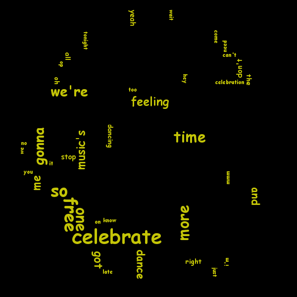

Above is a word cloud generated from the words used in the song "One More Time".
Webpage made for my CISC3130 class at Brooklyn College.
- Using hash table I can sort the frequency of the words used in the lyrics in ascending order.
- With hash table, words can be assigned to be paired up with a key value that represents the number of times it appears.
- Using the Kumo Library I created the world cloud over the image of the artists helmets.
- I went with this song because it brings back a lot of good memories, as it was the first song I had downloaded onto my first mp3 player.
- Surprisingly the most used words weren't "one more time", considering it's the title and we hear it over and over again throughout the song.
- Below I am including the word count on the song's lyrics as well as the lyrics with the music video so you can listen along.
Total words = 41
42: celebrate
34: so
34: free
30: more
30: one
30: time
25: gonna
25: we're
20: feeling
18: got
18: me
18: music's
17: and
17: dance
7: don't
7: yeah
7: stop
6: oh
6: right
6: the
5: dancing
5: all
3: you
2: tonight
2: mmm
2: just
2: need
2: celebration
2: know
1: no
1: wait
1: do
1: i'm
1: we
1: late
1: too
1: can't
1: hey
1: on
1: come
1: it